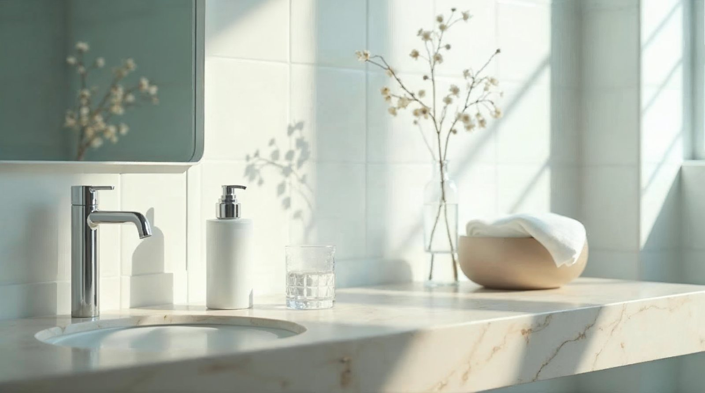
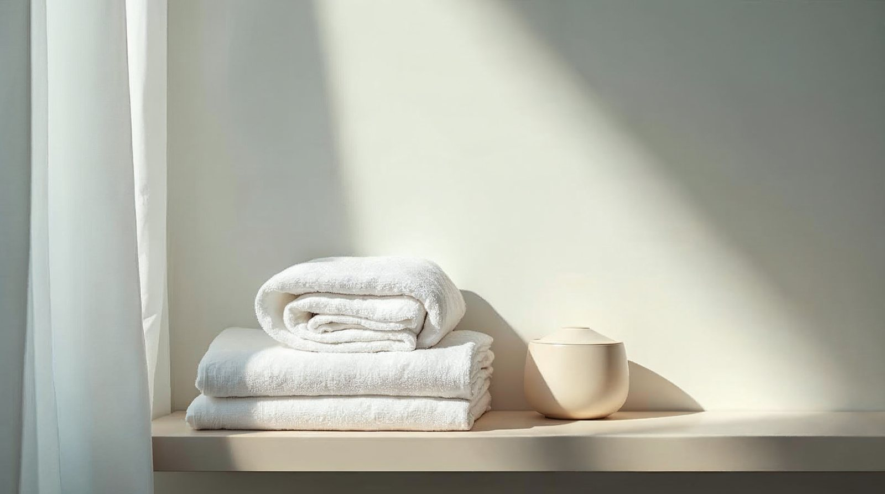
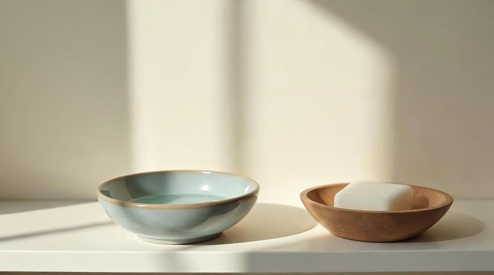
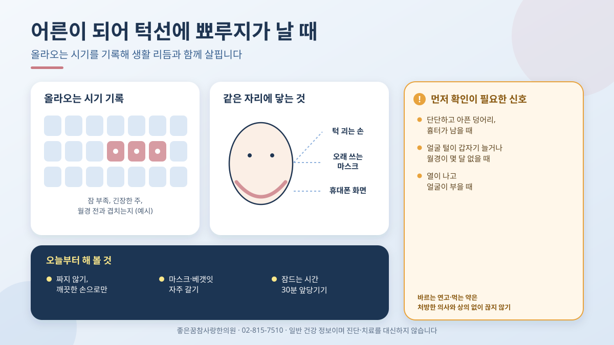

이종호 한의사 감수좋은꿈참사랑한의원 대표원장 (한의사 면허번호 19769)발행 2026-11-23 · 수정 2026-11-26
이 글의 차례
- 왜 이런 불편이 생길 수 있나요
- 턱선 뾰루지와 헷갈리기 쉬운 것은 무엇인가요?
- 먼저 이렇게 여쭙니다
- 일상에서 먼저 해 볼 수 있는 것
- 손이 가는 습관은 어떻게 줄일까요?
- 월경 주기와 함께 어떻게 기록하나요?
- 상황별 예시
- 스스로 점검해 보세요
- 한의학에서는 턱선 뾰루지를 어떻게 바라보나요?
- 자주 하는 오해는 무엇인가요?
- 바쁜 날 저녁 세안은 어떻게 할까요?
- 마스크와 베갯잇은 어떻게 관리할까요?
- 한의원에서 함께 살필 수 있는 경우
- 첫 진료는 어떤 순서로 진행되나요?
- 다시 오셨을 때는 무엇을 비교하나요?
- 얼마나 지켜보고 언제 상담할까요
- 이렇게 기록해 오시면 상담이 쉬워집니다
- 이런 증상은 먼저 확인이 필요합니다
- 함께 읽으면 좋은 글
어른이 된 뒤 턱선에 뾰루지가 반복된다면 잠 부족, 스트레스, 월경 주기, 손이나 마스크의 자극이 겹칠 때 심해지는 경우가 많아, 올라오는 시기를 기록해 생활 리듬과 함께 살피는 것이 먼저입니다.
학생 때는 괜찮았는데 직장에 다니면서, 혹은 노량진에서 오래 시험을 준비하면서 턱과 입 주변에 계속 올라온다는 분이 많습니다.
왜 이런 불편이 생길 수 있나요
- 잠이 부족하고 긴장이 이어지면 피지 분비와 피부 회복의 리듬이 흔들리는 경우가 있습니다.
- 월경 전에는 호르몬 변화로 턱과 입 주변에 뾰루지가 잘 올라오는 분이 있습니다.
- 턱을 괴는 습관, 오래 쓰는 마스크, 휴대폰 화면이 닿는 자극이 같은 자리에 반복됩니다.
- 늦게 자고 아침을 거르거나 야식을 먹는 생활이 이어지면 소화와 잠의 리듬이 함께 흔들리기 쉽습니다.
- 손으로 만지거나 짜면 염증이 깊어지고 자국이 오래 남을 수 있습니다.
- 한의학에서는 소화와 대변, 얼굴로 열이 오르는 경향도 피부와 함께 살핍니다.
사춘기 여드름이 이마와 코에 많다면, 어른이 된 뒤의 뾰루지는 턱선과 입 주변, 목 위쪽에 모이는 경우가 많습니다. 이 자리는 호르몬 변화에 예민하게 반응하고, 손과 마스크가 자주 닿는 곳이기도 합니다.
또 어른의 뾰루지는 크게 한 번 올라왔다 가라앉는 것보다, 생활이 흔들리는 시기마다 같은 자리에 되풀이되는 모습이 흔합니다. 그래서 하나하나보다 반복되는 흐름을 보는 것이 중요합니다.
턱선 뾰루지와 헷갈리기 쉬운 것은 무엇인가요?
턱과 입 주변에 오돌토돌한 것이 올라온다고 모두 같은 여드름은 아닙니다. 모양을 보면 살필 방향이 달라지기도 합니다.
- 입 둘레에 작고 붉은 좁쌀이 촘촘히 퍼지고 입술 바로 옆은 비어 있다면, 입 주위 피부염일 수 있어 바르던 연고나 화장품을 함께 확인합니다.
- 면도한 자리를 따라 털구멍마다 붉은 점이 생긴다면 모낭염과 구분이 필요합니다.
- 같은 자리에 말랑한 덩어리가 몇 달째 그대로 있다면 다른 혹일 수 있어 피부과 확인을 권합니다.
- 볼과 코가 쉽게 붉어지고 화끈거리며 작은 뾰루지가 함께 있다면 주사(딸기코)와 구분해 봅니다.
이런 모습과 달리 하얗거나 붉은 뾰루지가 생활 리듬에 따라 오르내린다면, 아래처럼 기록과 생활 습관부터 함께 살핍니다.
먼저 이렇게 여쭙니다
- 뾰루지가 특히 심해지는 시기가 있나요? (시험, 마감, 월경 전 등)
- 잠은 몇 시에 자고 몇 시간 정도 주무시나요?
- 단 음식, 기름진 음식, 유제품을 자주 드시나요?
- 손으로 턱을 괴거나 마스크를 오래 쓰시나요?
- 최근 새로 바꾼 화장품이나 세안제가 있나요?
- 대변은 며칠에 한 번, 어떤 모양으로 보시나요?
- 얼굴로 열이 오르거나 입이 마르는 느낌이 있나요?
일상에서 먼저 해 볼 수 있는 것
- 손으로 짜지 않고 깨끗한 손으로만 얼굴 만지기
- 마스크와 베갯잇을 자주 갈아 쓰기
- 잠드는 시간을 30분이라도 앞당겨 보기
- 야식은 잠들기 3시간 전까지 마치고, 밤늦은 단 음료 줄여 보기
- 화장은 잠들기 전에 꼼꼼히 지우고, 세안은 미지근한 물로 부드럽게 하기
- 휴대폰 화면과 안경처럼 얼굴에 자주 닿는 물건 닦기
- 운동이나 땀을 흘린 뒤에는 미지근한 물로 가볍게 씻고, 젖은 마스크는 바로 바꾸기
- 뾰루지가 난 날을 달력에 표시해 월경·시험·마감 일정과 겹치는지 보기
손이 가는 습관은 어떻게 줄일까요?
턱을 괴거나 뾰루지를 만지는 것은 대부분 집중하거나 긴장할 때 저도 모르게 나옵니다. 의식해서 참는 것보다 손이 갈 자리를 바꿔 두는 편이 쉽습니다.
- 책상 높이와 모니터 높이를 맞춰 턱을 괼 일이 덜 생기게 하기
- 공부나 일을 할 때 손에 쥘 펜이나 작은 공을 두기
- 거울 앞에 오래 서 있지 않고, 짜고 싶을 때는 차가운 수건을 잠깐 대기
- 휴대폰 통화는 이어폰으로 해서 화면이 턱에 닿지 않게 하기
월경 주기와 함께 어떻게 기록하나요?
월경과 관련된 뾰루지는 한 번의 주기만 보아서는 흐름을 알기 어렵습니다. 달력 앱이나 수첩에 월경 시작일과 뾰루지가 올라온 날을 함께 표시해 두세요.
두세 번의 주기를 모으면 월경 며칠 전부터 올라오는지, 끝나고 며칠 뒤 가라앉는지가 보입니다. 그 무렵 잠이 짧았는지, 단 음식이 당겼는지, 대변이 막혔는지도 한 줄씩 덧붙이면 상담 때 훨씬 이야기하기 쉽습니다.
상황별 예시
- 예를 들어 마감이 몰리는 주마다 야근하고 새벽에 잠드는 직장인이라면, 뾰루지가 마감 주에 맞춰 올라오는지 달력에 적어 보고, 잠드는 시각을 지킬 수 있는 요일을 하루라도 정해 보는 것부터 시작할 수 있습니다.
- 예를 들어 노량진에서 하루 종일 앉아 공부하며 턱을 괴는 수험생이라면, 손이 닿는 자리와 뾰루지 위치가 겹치는지 보고, 끼니를 거르거나 단 간식으로 버티는 날이 많은지도 함께 살핍니다.
- 예를 들어 하루 종일 마스크를 쓰고 일하며 점심 뒤에도 같은 마스크를 다시 쓰는 경우라면, 여분 마스크를 챙겨 오후에 한 번 바꾸는 것만으로도 차이를 살펴볼 수 있습니다.
- 예를 들어 운동을 시작한 뒤부터 턱과 목 위쪽에 올라온다는 경우라면, 운동 중 땀을 닦는 수건이 깨끗한지, 운동 뒤 바로 씻는지, 단백질 보충제를 새로 먹기 시작했는지를 함께 적어 봅니다.

스스로 점검해 보세요
- 자정 넘어 잠드는 날이 일주일에 사흘 이상인가요?
- 턱을 괴거나 턱 주변을 자주 만지는 습관이 있나요?
- 마스크나 베갯잇을 며칠씩 그대로 쓰시나요?
- 대변을 사흘 넘게 못 보는 때가 자주 있나요?
- 월경 전이나 시험·마감 직전에 뾰루지가 몰려 올라오나요?
- 뾰루지를 짜고 난 자리에 자국이 오래 남은 적이 있나요?
해당하는 항목이 있다면 잠과 손 습관, 식사 시간부터 하나씩 바꿔 보세요.
한의학에서는 턱선 뾰루지를 어떻게 바라보나요?
한의학에서는 얼굴의 자리마다 몸의 흐름과 연결해 보는 관점이 있고, 턱과 입 주변은 아랫배와 월경, 장의 리듬과 함께 살피는 경우가 많습니다. 그래서 턱선 뾰루지로 오신 분께 대변과 월경 주기, 아랫배가 차거나 더부룩한지를 함께 여쭙니다.
또 긴장이 이어지면 열이 위로 몰려 얼굴이 화끈거리고 입이 마르는 모습이 함께 나타나기도 합니다. 이런 신호가 있는지 보면서 잠과 식사의 리듬을 함께 정리합니다.
대표원장은 잘 먹고, 잘 싸고, 잘 자고, 마음 편하고, 몸 따뜻하게, 이 다섯 가지를 몸이 회복하는 바탕으로 봅니다. 턱선 뾰루지로 오신 분께 대변과 잠, 긴장을 빠짐없이 여쭙는 것도 그 바탕 가운데 어디가 흔들렸는지 찾기 위해서입니다.
자주 하는 오해는 무엇인가요?
- 세안을 여러 번 하면 깨끗해져 덜 올라올 것이라는 생각: 너무 자주, 세게 씻으면 피부가 건조하고 예민해져 작은 자극에도 쉽게 붉어지기도 합니다.
- 어른 뾰루지는 화장품 탓이라는 생각: 화장품도 살피지만, 잠과 월경, 긴장, 손 습관이 함께 얽힌 경우가 많습니다.
- 특정 음식 하나만 끊으면 된다는 생각: 음식 하나보다 늦은 야식, 끼니 거르기, 잠 부족이 함께 겹친 경우가 많습니다.
바쁜 날 저녁 세안은 어떻게 할까요?
늦게 들어와 지친 날에도 화장과 땀, 마스크 자국은 지우고 자는 것이 좋습니다. 이럴 때는 단계를 줄이세요.
미지근한 물로 얼굴을 적시고, 순한 세안제를 손바닥에서 거품 낸 뒤 턱선과 입 주변을 손끝으로 부드럽게 굴리듯 씻습니다. 수건으로 눌러 닦은 뒤 가벼운 보습제 하나면 충분합니다. 여러 제품을 겹겹이 바르는 것보다 이 짧은 순서를 매일 지키는 편이 피부에 덜 부담스럽습니다.
마스크와 베갯잇은 어떻게 관리할까요?
턱선은 하루 종일 마스크가 닿고, 밤에는 베갯잇에 얼굴이 닿는 자리입니다. 같은 자리에 반복해서 올라온다면 이 두 가지를 먼저 살펴보세요.
- 마스크는 하루에 한 번 이상 바꾸고, 땀이나 화장으로 젖으면 바로 갈아 쓰기
- 천 마스크라면 매일 빨고, 향이 강한 섬유유연제는 피하기
- 베갯잇은 사나흘에 한 번 바꾸거나, 깨끗한 수건을 베개 위에 깔고 매일 바꾸기
이렇게 바꾼 날을 달력에 함께 표시해 두면, 닿는 자극이 뾰루지와 얼마나 맞물리는지 보기 쉬워집니다.
한의원에서 함께 살필 수 있는 경우
- 뾰루지가 월경 주기와 맞물려 반복되는 경우 주기와 몸의 변화를 함께 살핍니다.
- 스트레스와 잠 부족이 겹친 시기에 심해지는 경우 생활 리듬 전체를 함께 살핍니다.
- 소화가 더부룩하거나 변비가 함께 있는 경우 장의 리듬도 이어서 여쭙니다.
- 피부과 진료를 받고 있으면서 잠·소화·월경 주기 같은 몸의 흐름도 함께 살피고 싶은 경우입니다.
좋은꿈참사랑한의원에서는 뾰루지만 보지 않고, 얼굴로 열이 오르는 편인지, 소화가 더부룩한 편인지처럼 몸 전체의 리듬을 함께 확인한 뒤 침이나 한약 상담 등 상태에 맞는 방법을 정합니다.
임신을 준비 중이거나 임신 중이라면 한약 상담 전에 먼저 말씀해 주시고, 산부인과와도 상의해 주세요.
첫 진료는 어떤 순서로 진행되나요?
- 모든 분의 맥을 먼저 짚고, 뾰루지가 반복되기 시작한 시기와 심해지는 때를 듣습니다.
- 턱선과 입 주변, 목 위쪽을 보며 뾰루지의 모양과 자국을 확인합니다.
- 쓰는 화장품과 세안제, 바르거나 먹는 약을 확인하고, 필요하다고 판단되면 혀의 모습도 살핍니다.
- 잠, 식사, 대변, 월경 주기, 긴장을 여쭌 뒤 상태에 맞는 방법을 정하고, 다음 주기까지 기록할 항목을 알려 드립니다.
다시 오셨을 때는 무엇을 비교하나요?
두 번째 진료부터는 다시 맥을 짚고 달력 기록을 함께 펼쳐 봅니다. 이번 주기에 뾰루지가 올라온 날과 잠, 식사, 대변이 어떻게 겹쳤는지, 같은 자리에 다시 올라왔는지, 자국은 어떤지도 찍어 오신 사진과 함께 봅니다.
바꾼 습관 가운데 도움이 된다고 느낀 것과 지키기 어려웠던 것을 나눠 여쭙고, 다음 주기에 이어 갈 것을 다시 정합니다.

얼마나 지켜보고 언제 상담할까요
- 잠과 손 습관, 세안을 바꾼 뒤 월경 주기로는 두세 번, 그렇지 않다면 4~6주 정도 기록하며 흐름을 지켜볼 수 있습니다.
- 그사이에도 같은 자리에 계속 올라오고 자국이 늘어나면 상담을 받아 보시기를 권합니다.

이렇게 기록해 오시면 상담이 쉬워집니다
- 뾰루지가 올라온 날짜와 그 무렵의 월경·시험·마감 일정
- 그 주의 잠든 시간과 식사, 야식이나 술을 먹은 날
- 대변 횟수와 모양
- 쓰는 화장품과 세안제 이름
- 가장 심했던 때의 사진
같은 자리에 또 올라온 뾰루지를 보면 마음부터 지치기 쉽습니다. 다음에 오시면 뾰루지가 가장 몰렸던 주의 잠과 끼니부터 여쭙겠습니다.
이런 증상은 먼저 확인이 필요합니다
- 단단하고 아픈 덩어리가 깊게 생기거나 흉터가 남기 시작하는 경우
- 뾰루지 주변이 넓게 붓고 붉어지며 열이 나거나, 고름이 차오르며 통증이 점점 심해지는 경우
이런 신호가 있으면 한의원보다 가까운 병원이나 응급실을 먼저 찾으세요.
함께 읽으면 좋은 글
- 잠이 부족하면 피부가 푸석하고 트러블이 나는 이유는 무엇인가요?
- 마스크를 쓰는 부위에 트러블이 올라올 때는 어떻게 살피나요?
- 시험 스트레스로 변비나 속 쓰림이 올 때는 무엇을 살피나요?

여쭙는 것
- 뾰루지가 특히 심해지는 시기가 있나요? (시험, 마감, 월경 전 등)
- 잠은 몇 시에 자고 몇 시간 정도 주무시나요?
- 단 음식, 기름진 음식, 유제품을 자주 드시나요?
생활에서 해 볼 것
- 손으로 짜지 않고 깨끗한 손으로만 얼굴 만지기
- 마스크와 베갯잇을 자주 갈아 쓰기
- 잠드는 시간을 30분이라도 앞당겨 보기
한의원에서 함께 살필 것
- 뾰루지가 월경 주기와 맞물려 반복되는 경우 주기와 몸의 변화를 함께 살핍니다.
- 스트레스와 잠 부족이 겹친 시기에 심해지는 경우 생활 리듬 전체를 함께 살핍니다.
- 소화가 더부룩하거나 변비가 함께 있는 경우 장의 리듬도 이어서 여쭙니다.
먼저 확인이 필요한 신호
- 단단하고 아픈 덩어리가 깊게 생기거나 흉터가 남기 시작하는 경우
- 뾰루지 주변이 넓게 붓고 붉어지며 열이 나거나, 고름이 차오르며 통증이 점점 심해지…
한눈에 보는 표
| 구분 | 핵심 |
|---|---|
| 여쭙는 것 | 뾰루지가 특히 심해지는 시기가 있나요? (시험, 마감, 월경 전 등) 잠은 몇 시에 자고 몇 시간 정도 주무시나요? |
| 생활에서 해 볼 것 | 손으로 짜지 않고 깨끗한 손으로만 얼굴 만지기 마스크와 베갯잇을 자주 갈아 쓰기 |
| 한의원에서 함께 살필 것 | 뾰루지가 월경 주기와 맞물려 반복되는 경우 주기와 몸의 변화를 함께 살핍니다. 스트레스와 잠 부족이 겹친 시기에 심해지는 경우 생활 리듬 전체를 함께 살핍니다. |
| 먼저 확인이 필요한 신호 | 단단하고 아픈 덩어리가 깊게 생기거나 흉터가 남기 시작하는 경우 뾰루지 주변이 넓게 붓고 붉어지며 열이 나거나, 고름이 차오르며 통증이 점점 심해지는 경우 |
자주 묻는 질문
화장을 아예 안 해야 하나요?
꼭 그렇지는 않습니다. 자극이 적은 제품을 쓰고 잠들기 전 꼼꼼히 지우는 습관이 더 중요합니다.
먹는 음식이 정말 상관이 있나요?
사람마다 다릅니다. 먹은 음식과 뾰루지가 난 날을 함께 적어 보면 나에게 맞는 패턴을 찾는 데 도움이 됩니다.
피부과 치료와 함께 받아도 되나요?
받고 있는 치료와 바르거나 먹는 약을 알려 주시면 함께 확인합니다. 처방받은 약은 처방한 의사와 상의 없이 줄이거나 끊지 마세요.
뾰루지를 짜도 되나요?
손으로 짜면 염증이 깊어지거나 자국이 남을 수 있어 권하지 않습니다.
스트레스가 정말 피부와 관련이 있나요?
긴장이 이어지는 시기에는 잠이 짧아지고 끼니가 불규칙해지면서 피부 회복의 리듬도 흔들리는 경우가 있습니다. 그래서 피부만 보지 않고 그 시기의 잠과 소화, 마음의 긴장을 함께 여쭙니다.
좋은꿈참사랑한의원은 재진 때 지난번 이야기부터 이어서 여쭙니다. 진료시간과 예약은 오시는 길에서 확인하세요.
어디서 상담받을 수 있나요?
좋은꿈참사랑한의원은 서울 동작구 만양로2길 2 신성빌딩 3층·5층(서울 동작구 상도동, 7호선 상도역 3번 출구 근처)에 있습니다. 한의사 3명(이종호 대표원장, 조영기 수석진료원장, 정원영 진료원장)이 진료합니다. 진료시간은 평일 09:30~20:00(점심 13:00~14:00), 토·일·공휴일 09:30~15:00이며, 방문 전 전화로 확인을 권합니다. 예약은 네이버 예약, 카카오톡 상담, 전화 02-815-7510로 받습니다.
이 글은 일반적인 건강 정보이며 개인의 진단이나 치료를 대신하지 않습니다. 증상이 있거나 복용 중인 약이 있다면 진료를 통해 확인하세요. 치료 효과는 개인마다 다를 수 있습니다.
작성 기준: 일반적으로 알려져 있는 건강 정보를 참고해 정리했습니다(대표원장 감수). 증상 기록은 1~2주 동안 하루 1회, 비슷한 시간에 적어 오시면 지난 상태와 비교하기 쉽습니다.